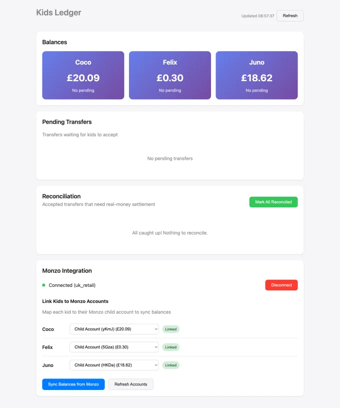
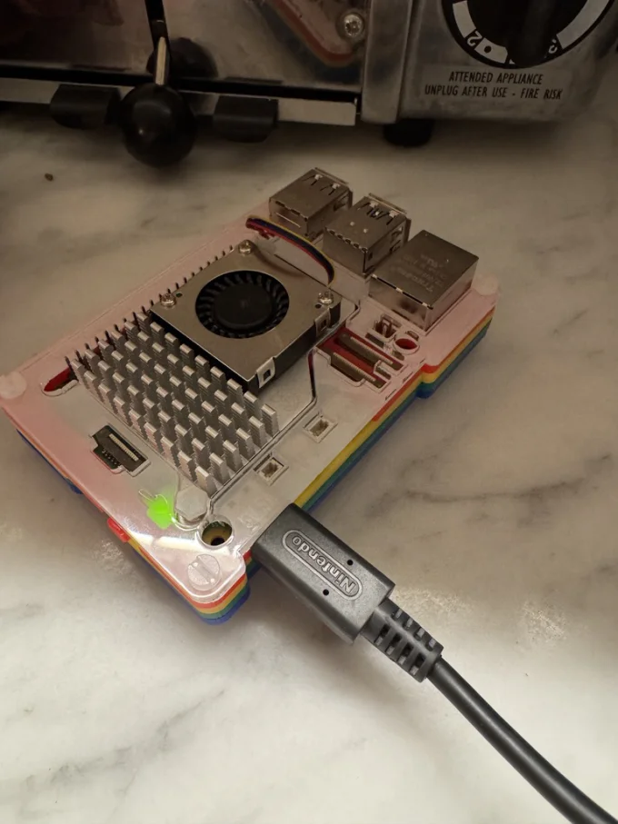
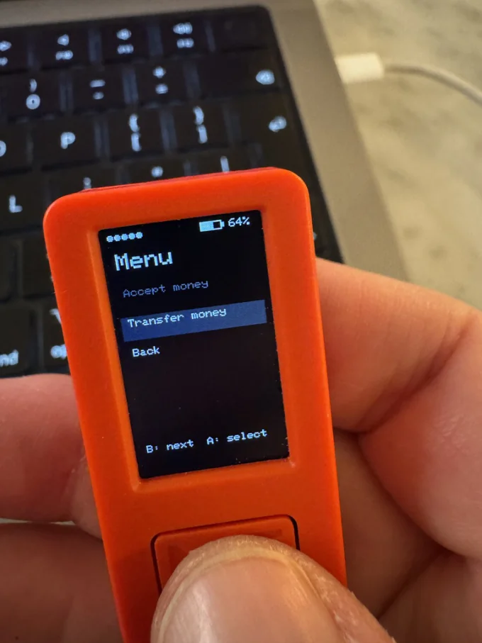
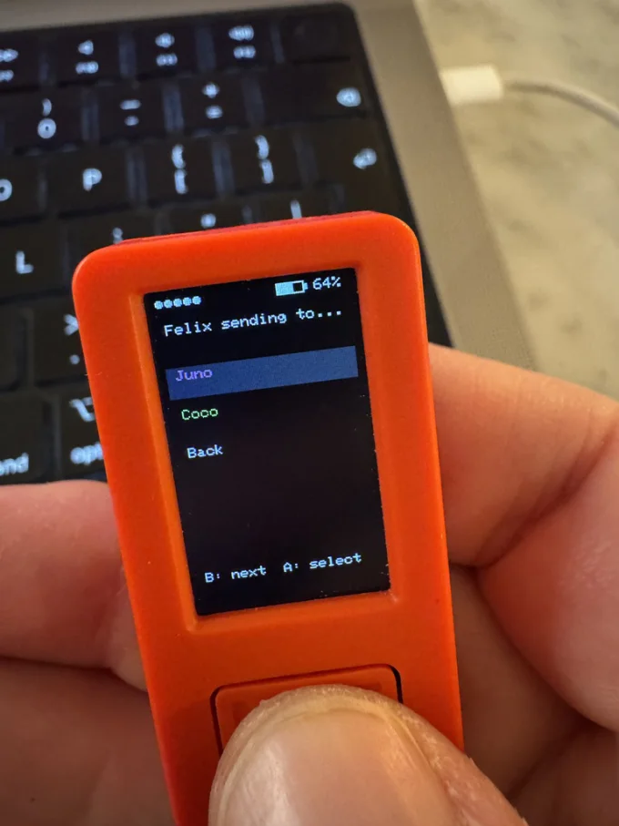
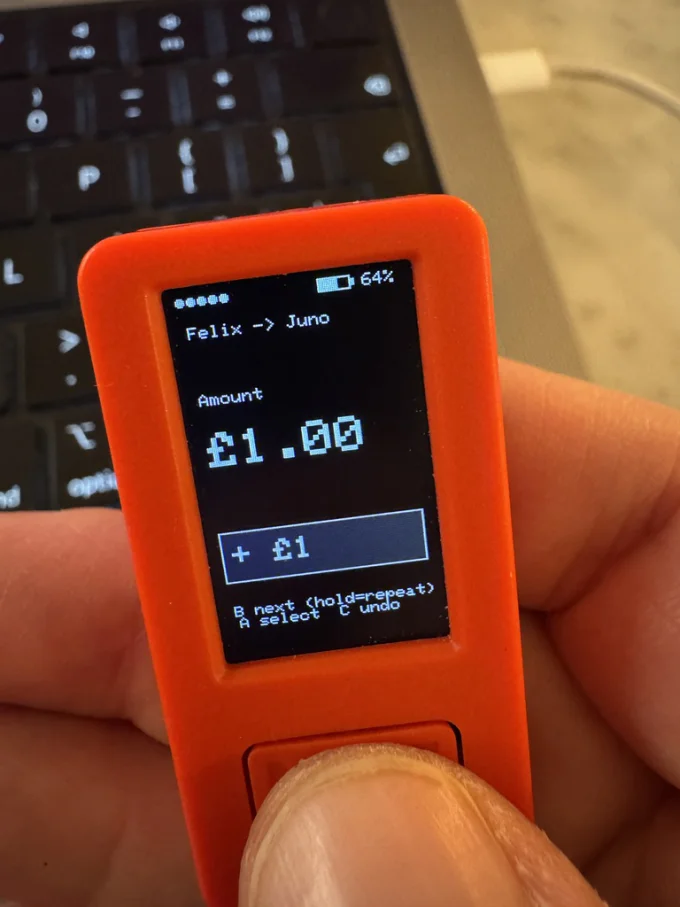
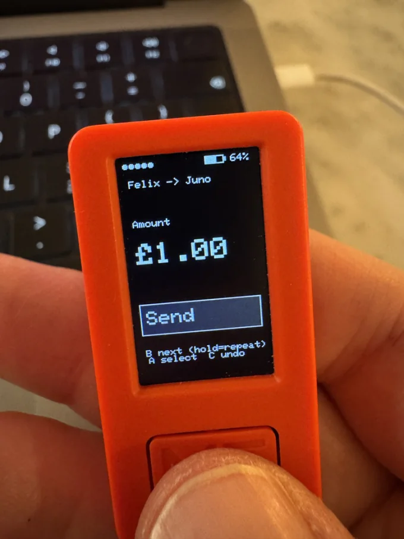
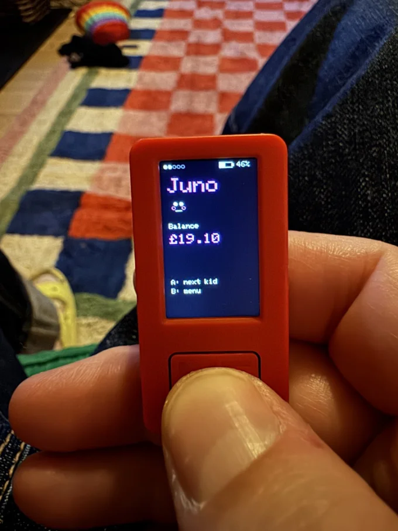

We're raising the first generation to grow up entirely cashless while simultaneously restricting their access to the devices where money now lives. Parents who got burned by social media are delaying smartphones. Schools are banning phones. But we've also stopped using cash; in 2014, 55% of UK payments were cash. Now it's 12%.
This creates an impossible situation; we want children to understand money, but we've removed both the traditional tools (physical cash) and the modern tools (banking apps on smartphones).
So I prototyped a little device.
When I shared this on LinkedIn it sparked a lot of discussion — ideas for savings goals, mini loans, and whether I'm basically running a household fintech now.
Version 1: Just let them see their balance
My kids have Monzo accounts. To check their balance, they had to ask me to open my phone, authenticate, switch accounts, and read them a number. This happened multiple times a day.
The first version was simple: an M5StickC Plus (a tiny ESP32 device with a screen) that connects to WiFi, hits the Monzo API, and displays each child's balance. Click the button, cycle through kids.
struct Child {
const char* name;
float balance;
};
Child children[3] = {
{"Felix", 0},
{"Juno", 0},
{"Coco", 0}
};Each kid gets their own colour, cyan for Felix, magenta for Juno, green for Coco, and a little face drawn with basic primitives:
// Felix: classic smile + freckles
void drawFaceFelix(int x, int y, uint16_t accent) {
M5.Lcd.drawCircle(x + 12, y + 12, 12, accent); // head
M5.Lcd.fillCircle(x + 8, y + 10, 2, WHITE); // eyes
M5.Lcd.fillCircle(x + 16, y + 10, 2, WHITE);
// smile (simple chevron)
M5.Lcd.drawLine(x + 7, y + 16, x + 12, y + 18, WHITE);
M5.Lcd.drawLine(x + 12, y + 18, x + 17, y + 16, WHITE);
}The device polls Monzo every 5 minutes. A row of dots at the top shows how long until the next refresh, a small touch that stops them asking "is it up to date?"

This worked. They could check their own money without involving me. But then they wanted more.
Version 2: The mini bank
Siblings and money = they're constantly bartering. "I'll give you 50p if you swap desserts." "You owe me a pound from yesterday." Monzo doesn't let individuals make transfers via their available API.
So I built a local ledger.
The M5Stick now talks to a Raspberry Pi running on my home network. The Pi maintains a ledger of balances that syncs with Monzo for the "base truth" but allows peer-to-peer transfers between the kids. When Felix sends Juno £2, it happens instantly on the device. Later, I reconcile with actual Monzo transfers from an admin screen.
  The transfer flow
Building an amount on a tiny screen with two buttons is a UX challenge. I went with a "chip stack" approach: you select denominations (£1, 50p, 20p, 10p, 5p, 1p) and keep adding them. First you pick who you're sending to:
static const int CHIP_VALUES_PENCE[] = {100, 50, 20, 10, 5, 1};
static const char *CHIP_LABELS[] = {"1", "50p", "20p", "10p", "5p", "1p"};
void pushChip(int pence) {
if (chipStackLen >= STACK_MAX) return;
chipStack[chipStackLen++] = pence;
transferTotalPence += pence;
}
void undoChip() {
if (chipStackLen <= 0) return;
int last = chipStack[--chipStackLen];
transferTotalPence -= last;
}Hold the button and chips repeat-add, so you can quickly build £5 by holding on the £1 chip. The power button undoes the last chip. It feels tactile, like stacking real coins.
 Pending money
When someone receives a transfer, the money doesn't appear immediately. It sits in a "pending" state until the recipient explicitly accepts it. This was partly a design choice (to make receiving money feel like an event) and partly practical (to stop one kid from silently draining another's account).
bool acceptPendingForKid(int idx, int &fromP, int &toP) {
// POST to server to accept pending money
// Returns the before/after balances for animation
...
}
void animateAcceptCountUp(int fromPence, int toPence) {
const int steps = 16;
const int totalMs = 800;
for (int i = 0; i <= steps; i++) {
int v = fromPence + (int)((long)(toPence - fromPence) * i / steps);
kids[currentKid].visiblePence = v;
drawMain();
delay(stepDelay);
}
}The balance counts up from old to new. It's a small thing, but they love watching their money tick upward.
Sleep and wake
Kids leave things on. The screen dims after 90 seconds of inactivity to save battery, then wakes on any button press:
static const unsigned long SLEEP_AFTER_MS = 90000;
void goToSleepScreenOnly() {
screenSleeping = true;
M5.Axp.ScreenBreath(SCREEN_BRIGHTNESS_DIM);
}The sneaky behaviour problem
I mentioned in my original post that I'd noticed "some sneaky behaviour", kids sending money from other people's accounts to their own. The current version doesn't yet have PIN codes. That's next.
The interesting thing is that this is exactly the kind of financial behaviour you want them to encounter in a safe environment. Better they learn about account security from a sibling who takes their pocket money than from a scammer who takes their savings.
What I learned
Money is more tangible when you have to do something to see it. The act of picking up a device, pressing a button, and reading a screen makes money more real than a number in an app you never open.
Peer-to-peer matters more than parent-to-child. Most of my kids' financial activity is between each other. The bartering, the loans, the "I'll pay you back" promises — that's where they're actually learning.
Small screens force clarity. You can't hide behind feature complexity on a 135×240 pixel display. Every piece of information has to earn its place.
The code
The full source for both versions is below. You'll need:
- An M5StickC Plus (or similar ESP32 device with display)
- Arduino IDE with M5StickCPlus library
- For V2: a Raspberry Pi (or any server) running the ledger API
- Monzo developer API access (for reading balances)
What's next
- PIN codes — obvious requirement
- Savings goals — visual progress toward something they're saving for